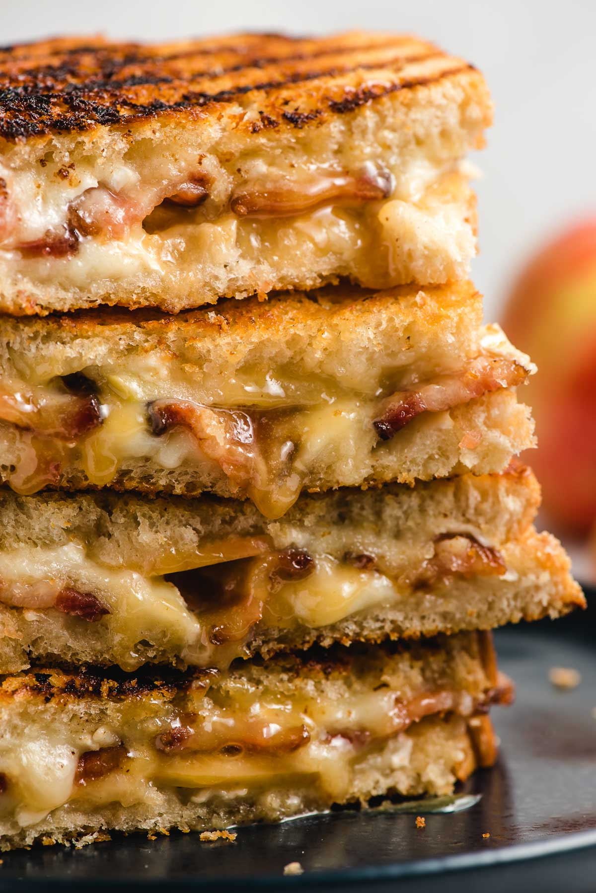
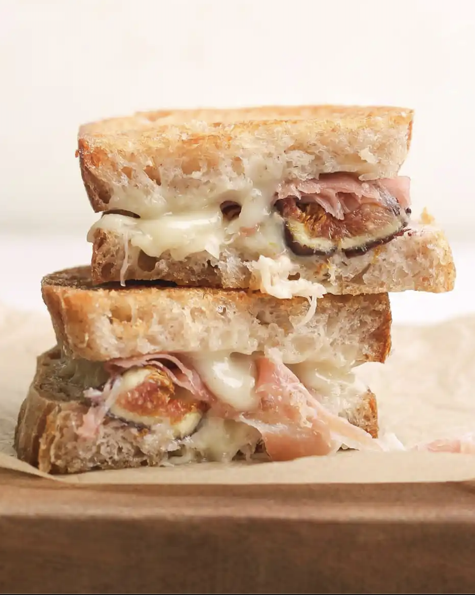

 <div id="Recipes" class="tab-pane fade">
    <div class="container">
      <h2>Recipes</h2>
      <div class="row">
        <div class="col-sm-4">
          <h3> Pesto and Sun-Dried Tomato Grilled Cheese: </h3>
          
          <p>
              Ingredients:

2 slices of artisan bread (sourdough or ciabatta work well)
Butter
2-3 tablespoons of basil pesto
2-3 slices of mozzarella cheese
Sun-dried tomatoes, sliced
Handful of fresh baby spinach
Instructions:

Butter one side of each slice of bread.
Spread basil pesto on the opposite side of each bread slice.
Place a slice of mozzarella on the pesto side of one bread slice.
Add sun-dried tomato slices and fresh baby spinach on top of the mozzarella.
Top with another slice of mozzarella and the second slice of bread, pesto side down.
Heat a skillet or pan over medium heat.
Place the sandwich in the skillet and cook until the bread is golden brown, and the cheese is melted (approximately 3-4 minutes per side).
Remove from the skillet, let it cool for a moment, and then slice diagonally.
This grilled cheese combines the rich flavors of basil pesto, sun-dried tomatoes, and melted mozzarella for a delightful twist on the classic. Enjoy!</p>

        </div>
        <div class="col-sm-4">
          <h3>Apple and Brie Grilled Cheese with Caramelized Onions:</h3>
          
          <p>
Ingredients:

2 slices of multigrain bread
Butter
2-3 oz Brie cheese, sliced
1/2 apple, thinly sliced (use a sweet variety like Honeycrisp)
Caramelized onions (cooked in advance)
Honey for drizzling
Instructions:

Butter one side of each slice of multigrain bread.
Place the Brie cheese on the unbuttered side of one bread slice.
Layer thinly sliced apples over the Brie.
Add a generous portion of caramelized onions on top of the apples.
Drizzle a bit of honey over the onions.
Place the second slice of bread on top, buttered side facing out.
Heat a skillet or pan over medium heat.
Cook the sandwich until the bread is golden brown, and the Brie is melted (approximately 3-4 minutes per side).
Remove from the skillet, let it cool for a moment, and then slice diagonally.
This grilled cheese brings together the creamy Brie, the sweetness of apples, the savory flavor of caramelized onions, and a touch of honey for a delightful combination of tastes and textures. Enjoy!</p>

        </div>
        <div class="col-sm-4">
          <h3>Fig and Goat Cheese Grilled Cheese:</h3>
          
          <p>

Ingredients:

2 slices of whole grain bread
Butter
2-3 oz goat cheese
Fresh figs, sliced
Handful of arugula
Balsamic glaze for drizzling
Instructions:

Butter one side of each slice of whole grain bread.
Spread goat cheese on the unbuttered side of one bread slice.
Layer fresh fig slices and arugula on top of the goat cheese.
Drizzle a bit of balsamic glaze over the figs and arugula.
Place the second slice of bread on top, buttered side facing out.
Heat a skillet or pan over medium heat.
Cook the sandwich until the bread is golden brown and the goat cheese is softened (approximately 3-4 minutes per side).
Remove from the skillet, let it cool for a moment, and then slice diagonally.
This grilled cheese combines the creamy tanginess of goat cheese with the sweetness of fresh figs, and the peppery kick of arugula, all brought together by a drizzle of balsamic glaze. Enjoy this delightful and sophisticated twist on grilled cheese!


</p>


    </div>
  </div>